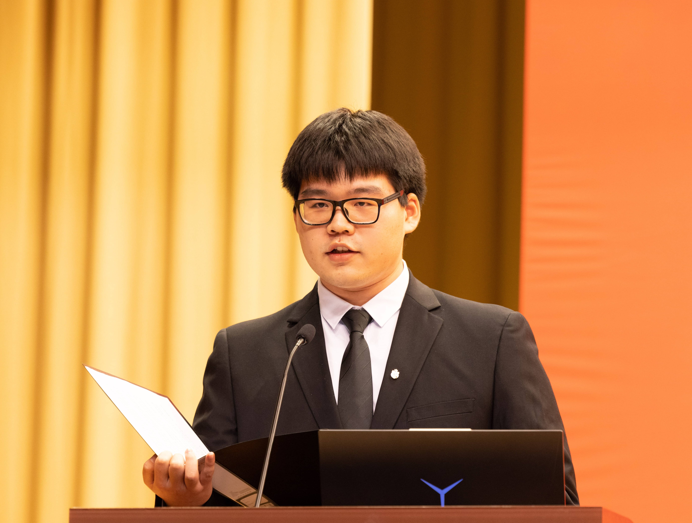

|
Tongxu Luo
I am Tongxu Luo, a third-year undergraduate student at USTB. B.S. Candidate in Computer Science and Technology.
Research Intern at CASIA, mentored by Dr. Shizhu He during my sophomore year (Mar 2023 - Nov 2023).
Research Intern at HKUST, under the guidance of Dr. Jie Fu (Nov 2023 - ).
My current research interests include Large Language Models, Continual Learning, Model Growth and Parameter-Efficient Fine-Tuning.
/
/
/
|

|
Stacking Your Transformers: A Closer Look at Model Growth for Efficient LLM Pre-Training
Wenyu Du*, Tongxu Luo*, Zihan Qiu, Zeyu Huang, Yikang Shen, Reynold Cheng, Yike Guo, Jie Fu
Preprint, 2024
|
Neeko: Leveraging Dynamic LoRA for Efficient Multi-Character Role-Playing Agent
Xiaoyan Yu*, Tongxu Luo*, Yifan Wei, Fangyu Lei, Yiming Huang, Peng Hao, Liehuang Zhu
Preprint, 2024
|
CMMMU: A Chinese Massive Multi-discipline Multimodal Understanding Benchmark
Ge Zhang, Xinrun Du, Bei Chen, Yiming Liang, Tongxu Luo, Tianyu Zheng, Kang Zhu, Yuyang Cheng, Chunpu Xu, Shuyue Guo, Haoran Zhang, Xingwei Qu, Junjie Wang, Ruibin Yuan, Yizhi Li, Zekun Wang, Yudong Liu, Yu-Hsuan Tsai, Fengji Zhang, Chenghua Lin, Wenhao Huang, Wenhu Chen, Jie Fu
Preprint, 2024
|
Answer-Based Entity Extraction and Alignment for Visual Text Question Answering
Jun Yu, Mohan Jing, Weihao Liu*, Tongxu Luo*, Bingyuan Zhang, Keda Lu, Fangyu Lei, Jianqing Sun, Jiaen Liang
ACMMM, 2023
|
TableQAKit: A Comprehensive and Practical Toolkit for Table-based Question Answering
Fangyu Lei*, Tongxu Luo*, Pengqi Yang*, Weihao Liu*, Shizhu He, Jun Zhao, Kang Liu
Preprint, 2023
|
MMHQA-ICL: Multimodal In-context Learning for Hybrid Question Answering over Text, Tables and Images
Weihao Liu, Fangyu Lei, Tongxu Luo, Jiahe Lei, Shizhu He, Jun Zhao, Kang Liu
Preprint, 2023
|
|
Scholarships
|
|
Awarded the National Scholarship for the 2022-2023 academic year.
|
|
{kind=link}